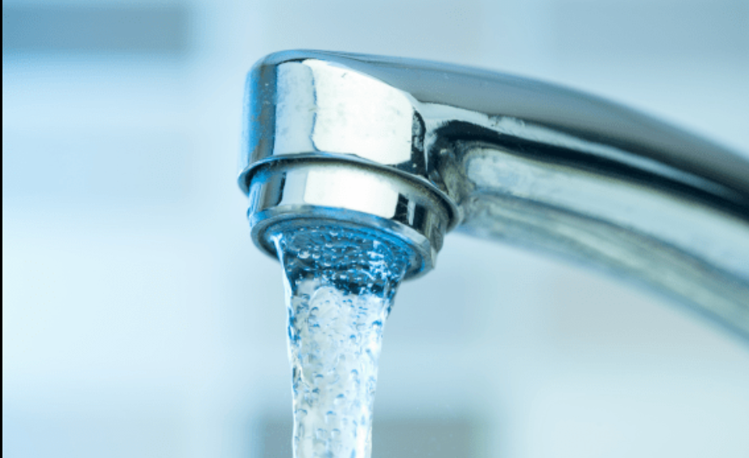

Víz használat
Napjainkban rengeteg lehetőség van arra, hogy óvjuk a környezetet háztartásainkban is. Gondolhatnád, hogy a lámpa lekapcsolása sokat segít viszont egy átlagos led izzó 2 óra alatt 10kwh használ aminek az ára 0.7ft, viszont amire talán te sem gondolsz ha teletöltöd az egész kádat és fürdesz egyet ahhoz 0,3 m³ gáz szükséges és még körübelül 150-200 liter víz ami rengeteg ha jobban belegondolsz, szóval egy gyors zuhanyzással fele vagy harmad annyira csökkenthetjük a fogyasztást.A háztartásban használatos tisztítószereket is lecserélhetjük környezetbarát alternatívákra, például ecetre vagy szódabikarbónára, amelyek nem szennyezik a vizeket és nem károsítják az élővilágot. A szelektív hulladékgyűjtés is egy remek kezdeményezés, mivel ezzel újrahasznosíthatjuk a műanyagot, papírt. 